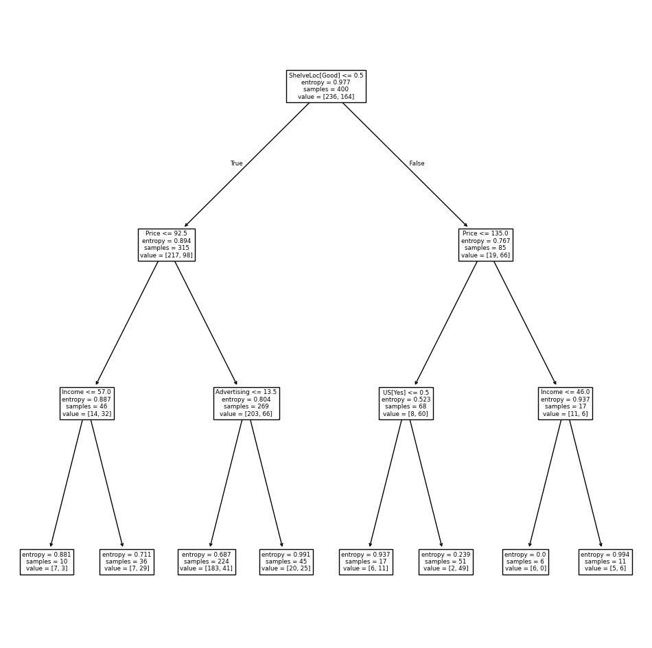
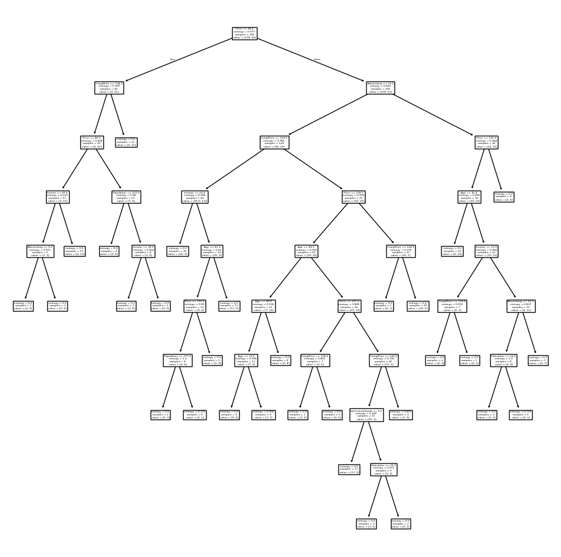
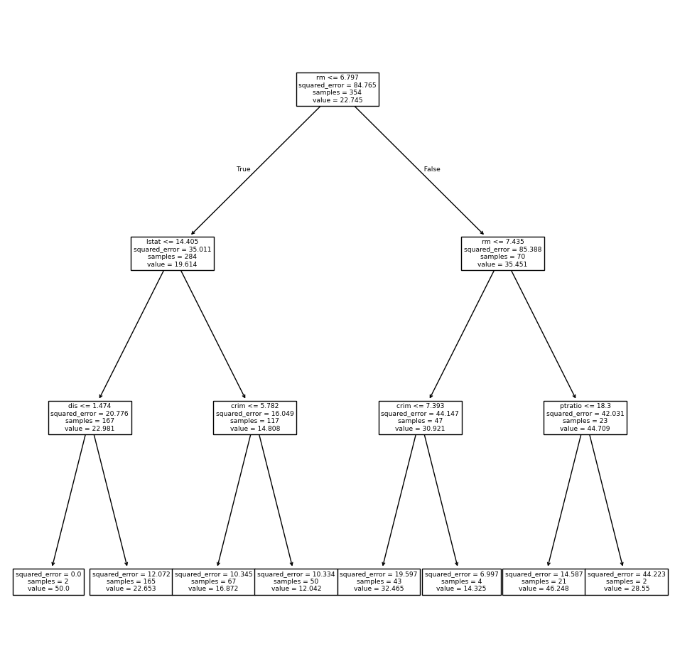
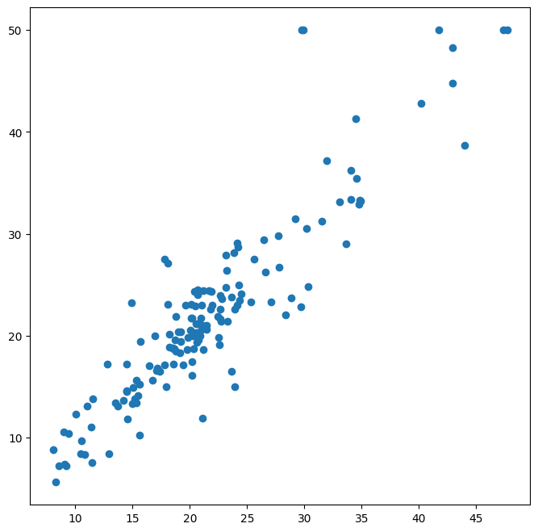
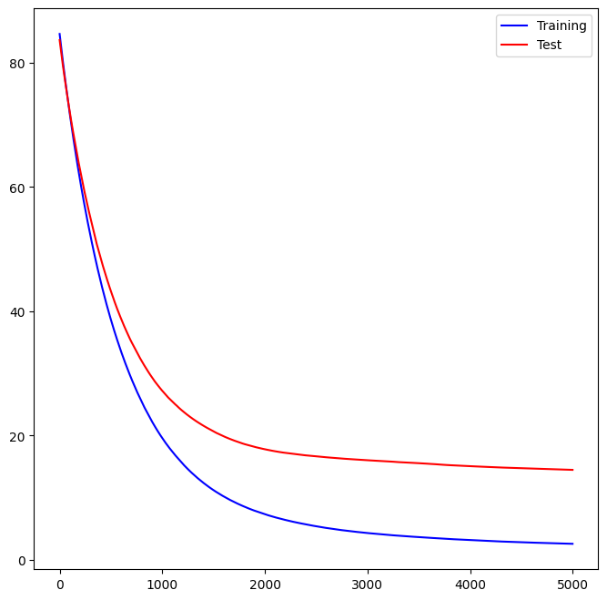

Tree-Based Methods#

We import some of our usual libraries at this top level.
import numpy as np
import pandas as pd
from matplotlib.pyplot import subplots
import sklearn.model_selection as skm
from ISLP import load_data, confusion_table
from ISLP.models import ModelSpec as MS
We also collect the new imports needed for this lab.
from sklearn.tree import (DecisionTreeClassifier as DTC,
DecisionTreeRegressor as DTR,
plot_tree,
export_text)
from sklearn.metrics import (accuracy_score,
log_loss)
from sklearn.ensemble import \
(RandomForestRegressor as RF,
GradientBoostingRegressor as GBR)
from ISLP.bart import BART
Fitting Classification Trees#
We first use classification trees to analyze the Carseats data set.
In these data, Sales is a continuous variable, and so we begin
by recoding it as a binary variable. We use the where()
function to create a variable, called High, which takes on a
value of Yes if the Sales variable exceeds 8, and takes
on a value of No otherwise.
Carseats = load_data('Carseats')
High = np.where(Carseats.Sales > 8,
"Yes",
"No")
We now use DecisionTreeClassifier() to fit a classification tree in
order to predict High using all variables but Sales.
To do so, we must form a model matrix as we did when fitting regression
models.
model = MS(Carseats.columns.drop('Sales'), intercept=False)
D = model.fit_transform(Carseats)
feature_names = list(D.columns)
X = np.asarray(D)
We have converted D from a data frame to an array X, which is needed in some of the analysis below. We also need the feature_names for annotating our plots later.
There are several options needed to specify the classifier,
such as max_depth (how deep to grow the tree), min_samples_split
(minimum number of observations in a node to be eligible for splitting)
and criterion (whether to use Gini or cross-entropy as the split criterion).
We also set random_state for reproducibility; ties in the split criterion are broken at random.
clf = DTC(criterion='entropy',
max_depth=3,
random_state=0)
clf.fit(X, High)
DecisionTreeClassifier(criterion='entropy', max_depth=3, random_state=0)In a Jupyter environment, please rerun this cell to show the HTML representation or trust the notebook.
On GitHub, the HTML representation is unable to render, please try loading this page with nbviewer.org.
DecisionTreeClassifier(criterion='entropy', max_depth=3, random_state=0)
In our discussion of qualitative features in Section~\ref{ch3:sec3},
we noted that for a linear regression model such a feature could be
represented by including a matrix of dummy variables (one-hot-encoding) in the model
matrix, using the formula notation of statsmodels.
As mentioned in Section~\ref{Ch8:decison.tree.sec}, there is a more
natural way to handle qualitative features when building a decision
tree, that does not require such dummy variables; each split amounts to partitioning the levels into two groups.
However,
the sklearn implementation of decision trees does not take
advantage of this approach; instead it simply treats the one-hot-encoded levels as separate variables.
accuracy_score(High, clf.predict(X))
0.79
With only the default arguments, the training error rate is
21%.
For classification trees, we can
access the value of the deviance using log_loss(),
\begin{equation*}
\begin{split}
-2 \sum_m \sum_k n_{mk} \log \hat{p}{mk},
\end{split}
\end{equation*}
where $n{mk}\( is the number of observations in the \)m$th terminal
node that belong to the \(k\)th class.
resid_dev = np.sum(log_loss(High, clf.predict_proba(X)))
resid_dev
0.4710647062649358
This is closely related to the entropy, defined in (\ref{Ch8:eq:cross-entropy}). A small deviance indicates a tree that provides a good fit to the (training) data.
One of the most attractive properties of trees is that they can
be graphically displayed. Here we use the plot() function
to display the tree structure.
ax = subplots(figsize=(12,12))[1]
plot_tree(clf,
feature_names=feature_names,
ax=ax);

The most important indicator of Sales appears to be ShelveLoc.
We can see a text representation of the tree using
export_text(), which displays the split
criterion (e.g. Price <= 92.5) for each branch.
For leaf nodes it shows the overall prediction
(Yes or No).
We can also see the number of observations in that
leaf that take on values of Yes and No by specifying show_weights=True.
print(export_text(clf,
feature_names=feature_names,
show_weights=True))
|--- ShelveLoc[Good] <= 0.50
| |--- Price <= 92.50
| | |--- Income <= 57.00
| | | |--- weights: [7.00, 3.00] class: No
| | |--- Income > 57.00
| | | |--- weights: [7.00, 29.00] class: Yes
| |--- Price > 92.50
| | |--- Advertising <= 13.50
| | | |--- weights: [183.00, 41.00] class: No
| | |--- Advertising > 13.50
| | | |--- weights: [20.00, 25.00] class: Yes
|--- ShelveLoc[Good] > 0.50
| |--- Price <= 135.00
| | |--- US[Yes] <= 0.50
| | | |--- weights: [6.00, 11.00] class: Yes
| | |--- US[Yes] > 0.50
| | | |--- weights: [2.00, 49.00] class: Yes
| |--- Price > 135.00
| | |--- Income <= 46.00
| | | |--- weights: [6.00, 0.00] class: No
| | |--- Income > 46.00
| | | |--- weights: [5.00, 6.00] class: Yes
In order to properly evaluate the performance of a classification tree on these data, we must estimate the test error rather than simply computing the training error. We split the observations into a training set and a test set, build the tree using the training set, and evaluate its performance on the test data. This pattern is similar to that in Chapter~\ref{Ch6:varselect}, with the linear models replaced here by decision trees — the code for validation is almost identical. This approach leads to correct predictions for 68.5% of the locations in the test data set.
validation = skm.ShuffleSplit(n_splits=1,
test_size=200,
random_state=0)
results = skm.cross_validate(clf,
D,
High,
cv=validation)
results['test_score']
array([0.685])
Next, we consider whether pruning the tree might lead to improved classification performance. We first split the data into a training and test set. We will use cross-validation to prune the tree on the training set, and then evaluate the performance of the pruned tree on the test set.
(X_train,
X_test,
High_train,
High_test) = skm.train_test_split(X,
High,
test_size=0.5,
random_state=0)
We first refit the full tree on the training set; here we do not set a max_depth parameter, since we will learn that through cross-validation.
clf = DTC(criterion='entropy', random_state=0)
clf.fit(X_train, High_train)
accuracy_score(High_test, clf.predict(X_test))
0.735
Next we use the cost_complexity_pruning_path() method of
clf to extract cost-complexity values.
ccp_path = clf.cost_complexity_pruning_path(X_train, High_train)
kfold = skm.KFold(10,
random_state=1,
shuffle=True)
This yields a set of impurities and \(\alpha\) values from which we can extract an optimal one by cross-validation.
grid = skm.GridSearchCV(clf,
{'ccp_alpha': ccp_path.ccp_alphas},
refit=True,
cv=kfold,
scoring='accuracy')
grid.fit(X_train, High_train)
grid.best_score_
0.685
Let’s take a look at the pruned true.
ax = subplots(figsize=(12, 12))[1]
best_ = grid.best_estimator_
plot_tree(best_,
feature_names=feature_names,
ax=ax);

This is quite a bushy tree. We could count the leaves, or query
best_ instead.
best_.tree_.n_leaves
30
The tree with 30 terminal
nodes results in the lowest cross-validation error rate, with an accuracy of
68.5%. How well does this pruned tree perform on the test data set? Once
again, we apply the predict() function.
print(accuracy_score(High_test,
best_.predict(X_test)))
confusion = confusion_table(best_.predict(X_test),
High_test)
confusion
0.72
| Truth | No | Yes |
|---|---|---|
| Predicted | ||
| No | 94 | 32 |
| Yes | 24 | 50 |
Now 72.0% of the test observations are correctly classified, which is slightly worse than the error for the full tree (with 35 leaves). So cross-validation has not helped us much here; it only pruned off 5 leaves, at a cost of a slightly worse error. These results would change if we were to change the random number seeds above; even though cross-validation gives an unbiased approach to model selection, it does have variance.
Fitting Regression Trees#
Here we fit a regression tree to the Boston data set. The
steps are similar to those for classification trees.
Boston = load_data("Boston")
model = MS(Boston.columns.drop('medv'), intercept=False)
D = model.fit_transform(Boston)
feature_names = list(D.columns)
X = np.asarray(D)
First, we split the data into training and test sets, and fit the tree to the training data. Here we use 30% of the data for the test set.
(X_train,
X_test,
y_train,
y_test) = skm.train_test_split(X,
Boston['medv'],
test_size=0.3,
random_state=0)
Having formed our training and test data sets, we fit the regression tree.
reg = DTR(max_depth=3)
reg.fit(X_train, y_train)
ax = subplots(figsize=(12,12))[1]
plot_tree(reg,
feature_names=feature_names,
ax=ax);

The variable lstat measures the percentage of individuals with
lower socioeconomic status. The tree indicates that lower
values of lstat correspond to more expensive houses.
The tree predicts a median house price of $12,042 for small-sized homes (rm < 6.8), in
suburbs in which residents have low socioeconomic status (lstat > 14.4) and the crime-rate is moderate (crim > 5.8).
Now we use the cross-validation function to see whether pruning the tree will improve performance.
ccp_path = reg.cost_complexity_pruning_path(X_train, y_train)
kfold = skm.KFold(5,
shuffle=True,
random_state=10)
grid = skm.GridSearchCV(reg,
{'ccp_alpha': ccp_path.ccp_alphas},
refit=True,
cv=kfold,
scoring='neg_mean_squared_error')
G = grid.fit(X_train, y_train)
In keeping with the cross-validation results, we use the pruned tree to make predictions on the test set.
best_ = grid.best_estimator_
np.mean((y_test - best_.predict(X_test))**2)
28.06985754975404
In other words, the test set MSE associated with the regression tree is 28.07. The square root of the MSE is therefore around 5.30, indicating that this model leads to test predictions that are within around $5300 of the true median home value for the suburb.
Let’s plot the best tree to see how interpretable it is.
ax = subplots(figsize=(12,12))[1]
plot_tree(G.best_estimator_,
feature_names=feature_names,
ax=ax);
Bagging and Random Forests#
Here we apply bagging and random forests to the Boston data, using
the RandomForestRegressor() from the sklearn.ensemble package. Recall
that bagging is simply a special case of a random forest with
\(m=p\). Therefore, the RandomForestRegressor() function can be used to
perform both bagging and random forests. We start with bagging.
bag_boston = RF(max_features=X_train.shape[1], random_state=0)
bag_boston.fit(X_train, y_train)
RandomForestRegressor(max_features=12, random_state=0)In a Jupyter environment, please rerun this cell to show the HTML representation or trust the notebook.
On GitHub, the HTML representation is unable to render, please try loading this page with nbviewer.org.
RandomForestRegressor(max_features=12, random_state=0)
The argument max_features indicates that all 12 predictors should
be considered for each split of the tree — in other words, that
bagging should be done. How well does this bagged model perform on
the test set?
ax = subplots(figsize=(8,8))[1]
y_hat_bag = bag_boston.predict(X_test)
ax.scatter(y_hat_bag, y_test)
np.mean((y_test - y_hat_bag)**2)
14.684333796052627

The test set MSE associated with the bagged regression tree is
14.63, about half that obtained using an optimally-pruned single
tree. We could change the number of trees grown from the default of
100 by
using the n_estimators argument:
bag_boston = RF(max_features=X_train.shape[1],
n_estimators=500,
random_state=0).fit(X_train, y_train)
y_hat_bag = bag_boston.predict(X_test)
np.mean((y_test - y_hat_bag)**2)
14.565312103157904
There is not much change. Bagging and random forests cannot overfit by increasing the number of trees, but can underfit if the number is too small.
Growing a random forest proceeds in exactly the same way, except that
we use a smaller value of the max_features argument. By default,
RandomForestRegressor() uses \(p\) variables when building a random
forest of regression trees (i.e. it defaults to bagging), and RandomForestClassifier() uses
\(\sqrt{p}\) variables when building a
random forest of classification trees. Here we use max_features=6.
RF_boston = RF(max_features=6,
random_state=0).fit(X_train, y_train)
y_hat_RF = RF_boston.predict(X_test)
np.mean((y_test - y_hat_RF)**2)
19.998839111842113
The test set MSE is 20.04;
this indicates that random forests did somewhat worse than bagging
in this case. Extracting the feature_importances_ values from the fitted model, we can view the
importance of each variable.
feature_imp = pd.DataFrame(
{'importance':RF_boston.feature_importances_},
index=feature_names)
feature_imp.sort_values(by='importance', ascending=False)
| importance | |
|---|---|
| lstat | 0.353808 |
| rm | 0.334349 |
| ptratio | 0.069519 |
| crim | 0.056386 |
| indus | 0.053183 |
| dis | 0.043762 |
| nox | 0.033085 |
| tax | 0.025047 |
| age | 0.019238 |
| rad | 0.005169 |
| chas | 0.004331 |
| zn | 0.002123 |
This
is a relative measure of the total decrease in node impurity that results from
splits over that variable, averaged over all trees (this was plotted in Figure~\ref{Ch8:fig:varimp} for a model fit to the Heart data).
The results indicate that across all of the trees considered in the
random forest, the wealth level of the community (lstat) and the
house size (rm) are by far the two most important variables.
Boosting#
Here we use GradientBoostingRegressor() from sklearn.ensemble
to fit boosted regression trees to the Boston data
set. For classification we would use GradientBoostingClassifier().
The argument n_estimators=5000
indicates that we want 5000 trees, and the option
max_depth=3 limits the depth of each tree. The
argument learning_rate is the \(\lambda\)
mentioned earlier in the description of boosting.
boost_boston = GBR(n_estimators=5000,
learning_rate=0.001,
max_depth=3,
random_state=0)
boost_boston.fit(X_train, y_train)
GradientBoostingRegressor(learning_rate=0.001, n_estimators=5000,
random_state=0)In a Jupyter environment, please rerun this cell to show the HTML representation or trust the notebook. On GitHub, the HTML representation is unable to render, please try loading this page with nbviewer.org.
GradientBoostingRegressor(learning_rate=0.001, n_estimators=5000,
random_state=0)We can see how the training error decreases with the train_score_ attribute.
To get an idea of how the test error decreases we can use the
staged_predict() method to get the predicted values along the path.
test_error = np.zeros_like(boost_boston.train_score_)
for idx, y_ in enumerate(boost_boston.staged_predict(X_test)):
test_error[idx] = np.mean((y_test - y_)**2)
plot_idx = np.arange(boost_boston.train_score_.shape[0])
ax = subplots(figsize=(8,8))[1]
ax.plot(plot_idx,
boost_boston.train_score_,
'b',
label='Training')
ax.plot(plot_idx,
test_error,
'r',
label='Test')
ax.legend();

We now use the boosted model to predict medv on the test set:
y_hat_boost = boost_boston.predict(X_test);
np.mean((y_test - y_hat_boost)**2)
14.478980532887332
The test MSE obtained is 14.48, similar to the test MSE for bagging. If we want to, we can perform boosting with a different value of the shrinkage parameter \(\lambda\) in (ref{Ch8:alphaboost}). The default value is 0.001, but this is easily modified. Here we take \(\lambda=0.2\).
boost_boston = GBR(n_estimators=5000,
learning_rate=0.2,
max_depth=3,
random_state=0)
boost_boston.fit(X_train,
y_train)
y_hat_boost = boost_boston.predict(X_test);
np.mean((y_test - y_hat_boost)**2)
14.501514553719568
In this case, using \(\lambda=0.2\) leads to a almost the same test MSE as when using \(\lambda=0.001\).
Bayesian Additive Regression Trees#
In this section we demonstrate a Python implementation of BART found in the
ISLP.bart package. We fit a model
to the Boston housing data set. This BART() estimator is
designed for quantitative outcome variables, though other implementations are available for
fitting logistic and probit models to categorical outcomes.
bart_boston = BART(random_state=0, burnin=5, ndraw=15)
bart_boston.fit(X_train, y_train)
BART(burnin=5, ndraw=15, random_state=0)In a Jupyter environment, please rerun this cell to show the HTML representation or trust the notebook.
On GitHub, the HTML representation is unable to render, please try loading this page with nbviewer.org.
BART(burnin=5, ndraw=15, random_state=0)
On this data set, with this split into test and training, we see that the test error of BART is similar to that of random forest.
yhat_test = bart_boston.predict(X_test.astype(np.float32))
np.mean((y_test - yhat_test)**2)
22.145009458109225
We can check how many times each variable appeared in the collection of trees. This gives a summary similar to the variable importance plot for boosting and random forests.
var_inclusion = pd.Series(bart_boston.variable_inclusion_.mean(0),
index=D.columns)
var_inclusion
crim 26.933333
zn 27.866667
indus 26.466667
chas 22.466667
nox 26.600000
rm 29.800000
age 22.733333
dis 26.466667
rad 23.666667
tax 24.133333
ptratio 24.266667
lstat 31.000000
dtype: float64